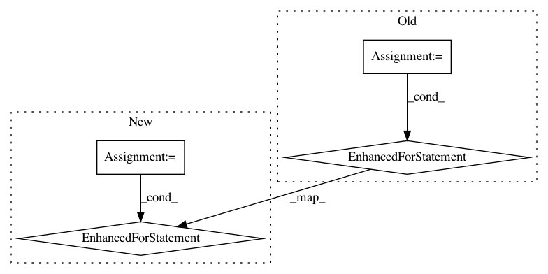

fe2fe5fc5eefe738d44833eba95d8ae246c196db,examples/development/main.py,ExperimentRunner,_restore,#ExperimentRunner#Any#,147
Before Change
if self._variant["algorithm_params"]["type"] == "SQL":
self.algorithm._Q_target.set_weights(self.algorithm._Q.get_weights())
else:
for Q, Q_target in zip(self.algorithm._Qs, self.algorithm._Q_targets):
Q_target.set_weights(Q.get_weights())
self._built = True
def main():
After Change
initialize_tf_variables(self._session, only_uninitialized=True)
// TODO(hartikainen): target Qs should either be checkpointed or pickled.
for Q, Q_target in zip(self.algorithm._Qs, self.algorithm._Q_targets):
Q_target.set_weights(Q.get_weights())
self._built = True
def main():
In pattern: SUPERPATTERN
Frequency: 4
Non-data size: 4
Instances
Project Name: rail-berkeley/softlearning
Commit Name: fe2fe5fc5eefe738d44833eba95d8ae246c196db
Time: 2019-02-01
Author: hartikainen@berkeley.edu
File Name: examples/development/main.py
Class Name: ExperimentRunner
Method Name: _restore
Project Name: rail-berkeley/softlearning
Commit Name: 4dd96193aaa69485ef183778f053fcfcbef457a2
Time: 2018-05-22
Author: azhou42@berkeley.edu
File Name: sac/algos/base.py
Class Name: RLAlgorithm
Method Name: _train
Project Name: rail-berkeley/softlearning
Commit Name: 445387698dad8bcdccb53b7708aba564c1a5c319
Time: 2019-02-01
Author: henryzhangbh@outlook.com
File Name: examples/development/main.py
Class Name: ExperimentRunner
Method Name: _restore
Project Name: rail-berkeley/softlearning
Commit Name: 5d350985ce3425d93eb0ddae565d14060e811bd6
Time: 2018-11-23
Author: hartikainen@berkeley.edu
File Name: softlearning/misc/nn.py
Class Name:
Method Name: feedforward_model